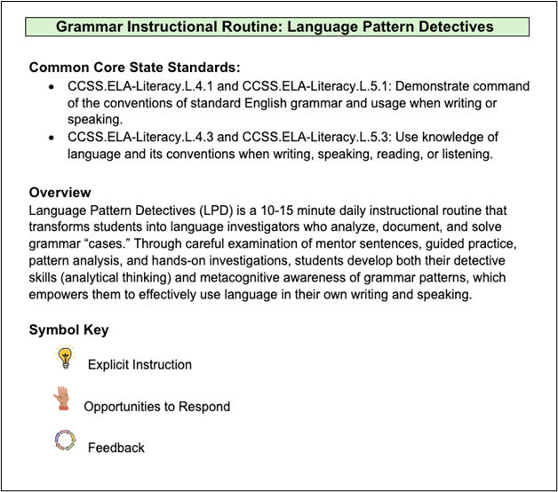

For Educators
Welcome! The Writing Architect invites you to use these resources to help enhance and support teaching curriculums.
We at the Writing Architect are comprised of teachers and researchers housed at Michigan State University. The activities created on this website are based off sound, evidence-based research. The components of writing in this website are the “heavy hitters” of writing (grammar, spelling, text structure, sentence structure, and typing fluency) which have shown to improve student writing in 4th and 5th grades. The activities are designed for teachers to supplement their school’s curriculum, if their curriculum does not provide writing instruction, or to be implemented on their own.
We use an Active Ingredient framework, in which it informs which components of the lessons are essential when teaching. These include explicit instruction, giving ample opportunities for students to respond, and feedback.
In addition to example lessons, we have included Instructional Routines. These are the structures of lessons that teachers can have the ability to manipulate the content. Instructional routines are like general recipes you would need to bake a cake. You would need your eggs, flour, and sugar (these are your active ingredients), but the flavor (the content of the lesson) would be up to you.

Explicit Instruction
- Clear and explicit way of teaching, not leaving anything to interpretation. A systematic way of teaching (Rosenshine, 1987; Torgesen, 2004).
- Giving the whole class ample chances to answer prompts or questions in a specific amount of time. Such as choral responses or hand signals (Fitzgerald, 2019).
- Giving students feedback to direct the areas of improvement and areas of strength.